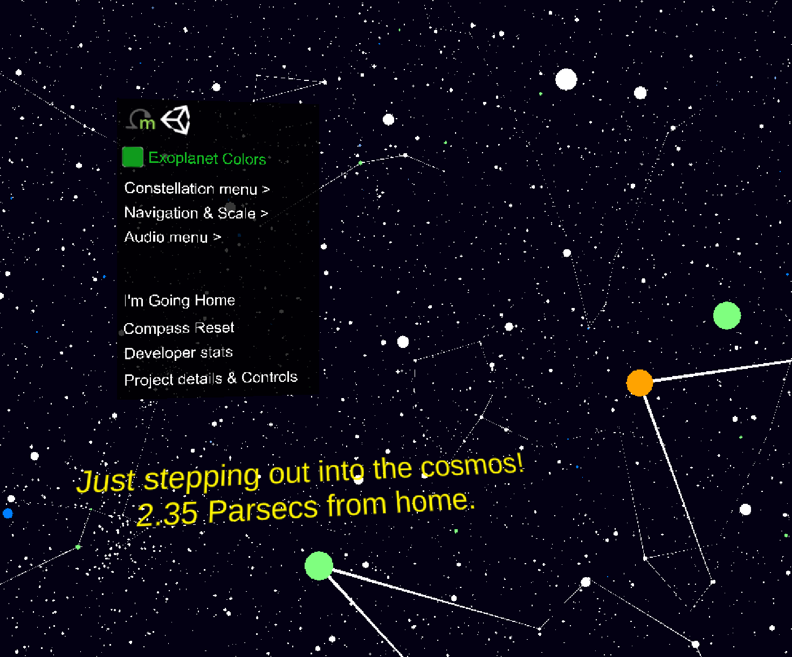
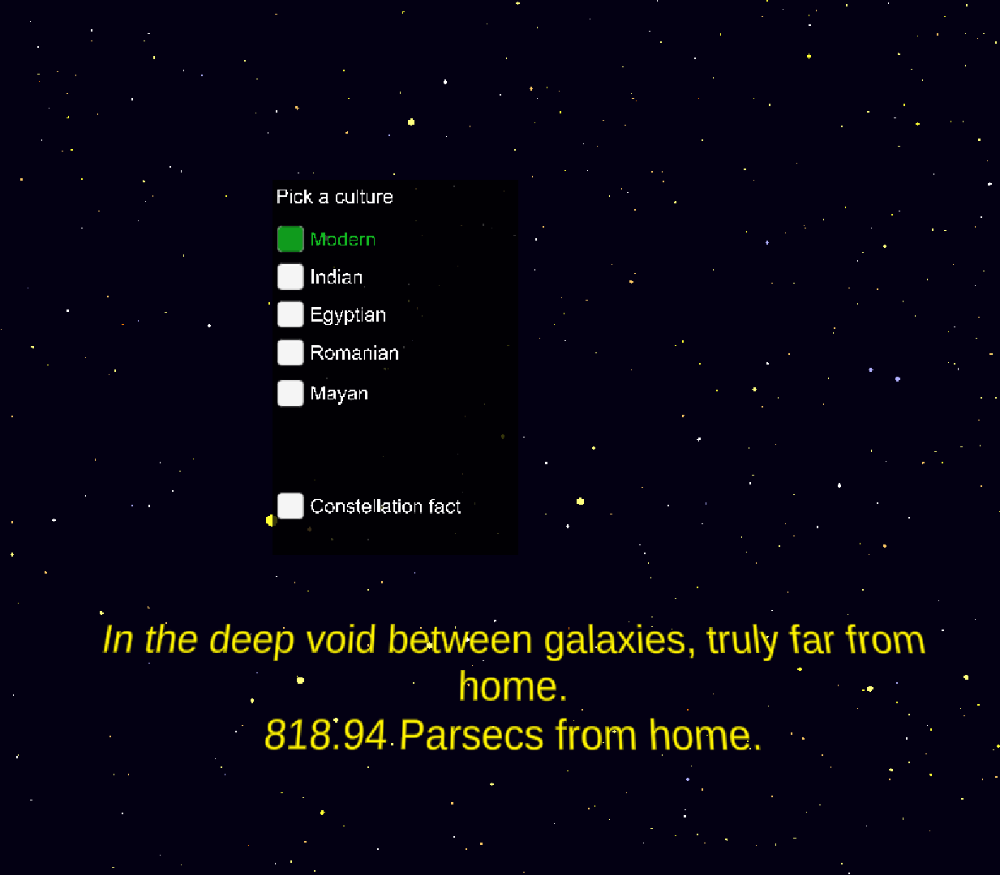
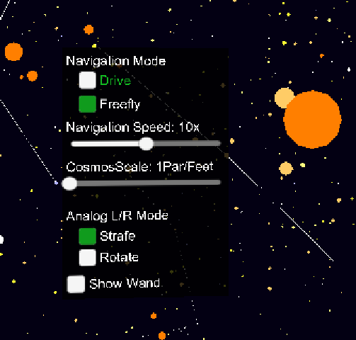
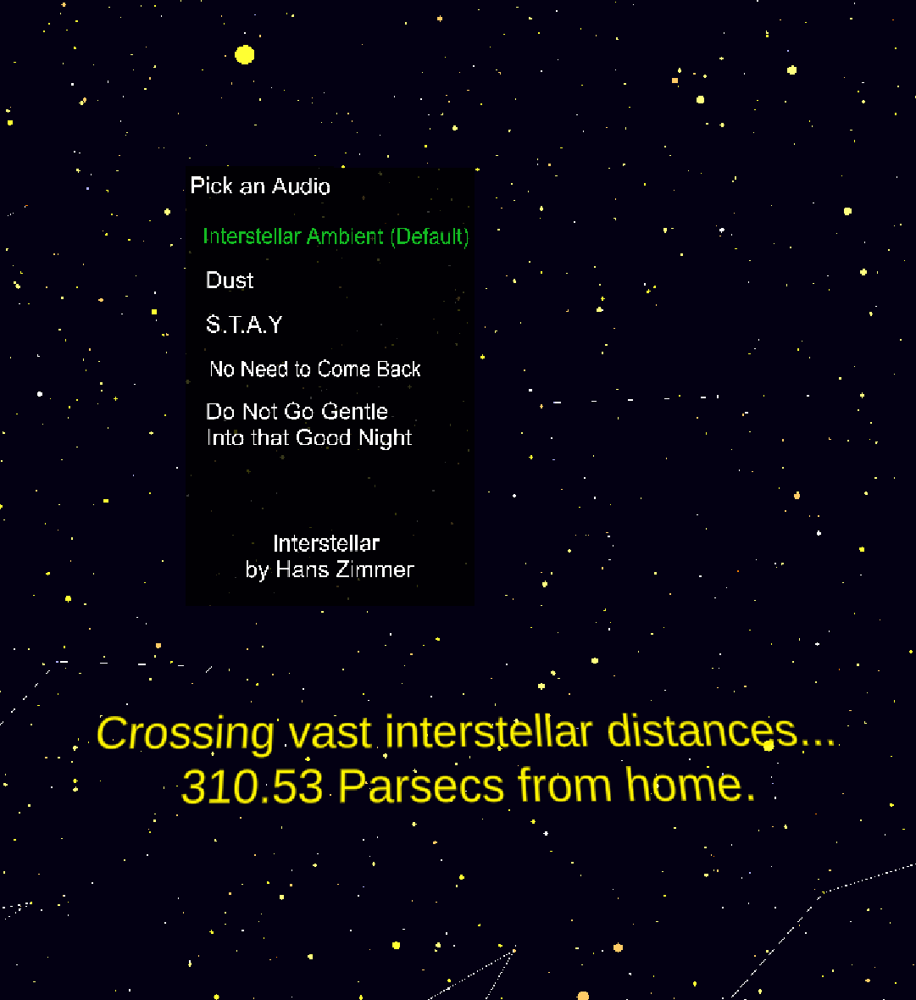

UI Screengrabs





An Immersive CAVE Journey into the Interstellar Space.
Begin your journey by downloading and installing Unity Hub, your portal to managing Unity Editor installations and your Unity projects.
Obtain your copy of the project using one of the following methods:
After downloading the project, it's time to explore::
When you first open the project, Unity will need to build and import the necessary packages. This process is automatic:
You're almost ready to launch: